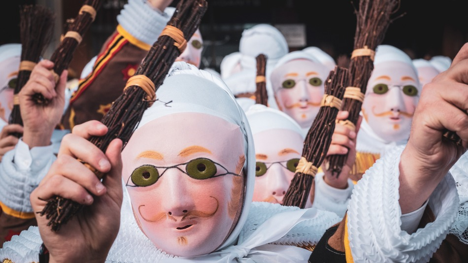
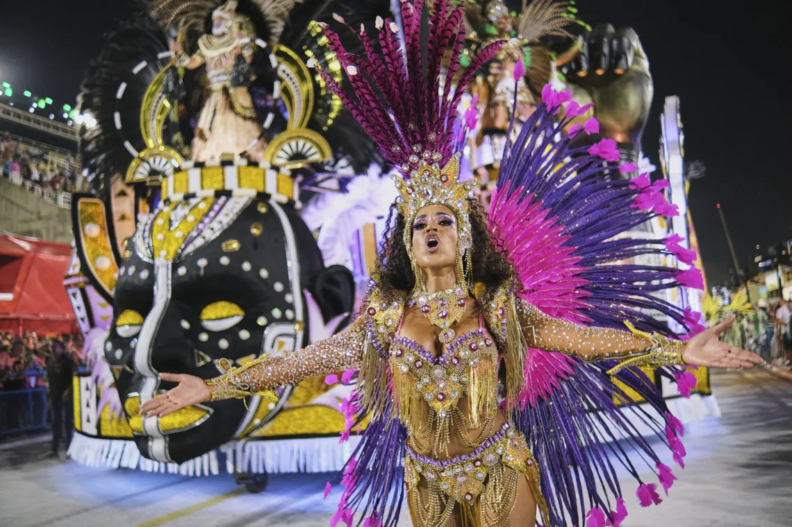
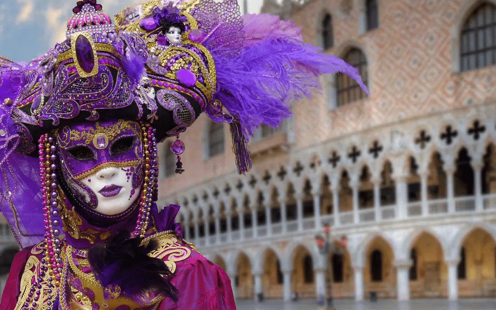
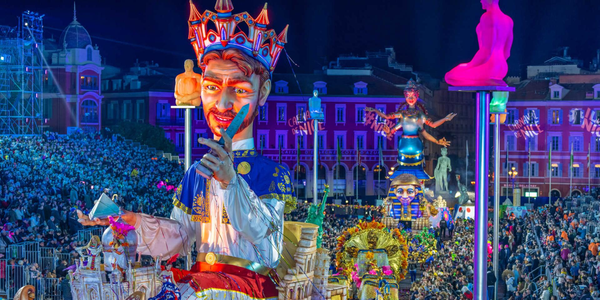

Reconnu par l'UNESCO, ce carnaval belge est unique. Le Mardi gras, les célèbres Gilles parcourent la ville avec leurs sabots de bois et leurs costumes ornés de lions. Au son des tambours, ils lancent des oranges aux spectateurs sous leurs chapeaux de plumes d'autruche. C'est un rite folklorique millénaire alliant tradition et ferveur.

Le plus grand spectacle au monde embrase le Brésil ! Au cœur du Sambodrome, les meilleures écoles de samba défilent dans une explosion de plumes, de paillettes et de chars monumentaux. Entre rythme effréné, costumes éblouissants et chaleur tropicale, Rio transforme la rue en une fête géante où la danse devient un véritable art de vivre.

Place au raffinement et au mystère dans la cité des Doges. Loin de la cohue, Venise se pare de costumes historiques somptueux et de masques en porcelaine. Entre la place Saint-Marc et les canaux, l'atmosphère devient théâtrale et silencieuse. C'est une plongée hors du temps où l'anonymat permet toutes les élégances dans un décor de rêve.

Sur la Côte d'Azur, ce carnaval brille par ses célèbres "Batailles de Fleurs" et ses défilés de chars allégoriques géants. Sur la Promenade des Anglais, des tonnes de mimosas et de lys sont lancées au public. Alliant satire politique et élégance florale, cet événement illumine l'hiver niçois sous les confettis et les lumières des parades.